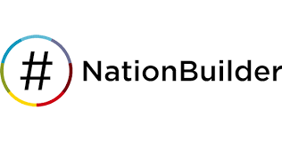

NationBuilder es una plataforma integral de gestión de relaciones, diseñada especialmente para ayudar a organizaciones, campañas políticas, movimientos sociales y ONGs a construir comunidades organizadas alrededor de una causa. Su principal valor radica en su capacidad de combinar, en un solo sistema, funciones de página web, base de datos de contactos, recaudación de fondos, redes sociales, correos electrónicos y análisis de datos.
NationBuilder fue fundada en 2011 por Jim Gilliam, un activista político y empresario tecnológico con una visión clara: democratizar el acceso a herramientas de organización digital. Gilliam, quien anteriormente había trabajado en el mundo del cine y de los medios digitales, fue testigo del poder de la tecnología para movilizar personas, y también de las limitaciones que enfrentaban las pequeñas organizaciones para acceder a soluciones tecnológicas robustas.
La idea de NationBuilder surgió como una plataforma de “nación digital”, donde cualquier comunidad pudiera organizarse como lo haría un partido político: tener una base de datos centralizada, herramientas de comunicación, seguimiento de voluntarios y gestión de donaciones. Su uso se volvió muy popular en campañas políticas de base, sobre todo en Estados Unidos y Canadá. Algunos partidos y candidatos independientes vieron en NationBuilder una forma de competir con estructuras partidarias tradicionales, ya que permitía lanzar campañas con bajo presupuesto pero alta eficiencia organizativa.
Con el tiempo, el software se adaptó a otros sectores más allá de la política, como sindicatos, asociaciones culturales, iglesias, clubes deportivos y organizaciones sin fines de lucro. NationBuilder se distinguió por su interfaz amigable, su capacidad para integrarse con redes sociales y por mantener siempre el enfoque en el empoderamiento de comunidades. A día de hoy, ha sido utilizado por miles de organizaciones en más de 100 países.